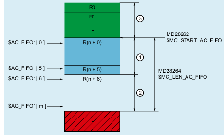
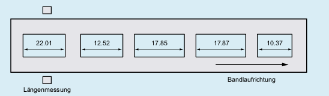

Eine FIFO-Variable stellt eine auf R-Parametern basierende komplexe Datenstruktur zur Verfügung. Die Datenstruktur besteht aus einem Verwaltungs- und einem Nutzdatenteil. Der Nutzdatenteil ist als Stapelspeicher (Stack) nach dem FIFO-Prinzip (First In, First Out) organisiert. Über den Index der FIFO-Variablen werden die unterschiedlichen Funktionen im Verwaltungsteil sowie die Nutzdaten angesprochen.
① | Verwaltungsteil |
② | Nutzdatenteil |
③ | R-Parameterbereich oberhalb der FIFO-Variablen: Schreiben und Lesen erlaubt |
④ | R-Parameterbereich unterhalb der FIFO-Variablen: Nur Lesen erlaubt |
| Hinweis |
Die über R-Parametern gemachten Aussagen gelten auch für FIFO-Variablen. Siehe Kapitel "R-Parameter ($R)". |
| FIFO-Datenstruktur in den R-Parametern, beginnend ab dem Wert von MD28262 $MC_START_AC_FIFO | ||
Datentyp: | REAL | ||
| Nummer der FIFO-Variablen | ||
Datentyp: | INT | ||
Wertebereich: | 1, 2, ... max. Nummer (siehe Weitere Informationen) | ||
| Index der FIFO-Variablen über den auf die verschiedenen Funktionen und Daten innerhalb der Datenstruktur der FIFO-Variablen zugegriffen. | ||
Wertebereich: | 0, 1, 2, ... (MD28264 $MC_LEN_AC_FIFO - 1) | ||
Wert | Bedeutung | ||
Verwaltungsdaten | |||
0 | Schreiben Das Schreiben eines Wertes auf den FIFO-Stack erfolgt durch die Zuweisung eines Wertes an den FIFO-Stack über Index 0 ($AC_FIFO[ 0 ] = <Wert>). Der zugewiesene Wert wird dabei auf den nächsten freien Platz des FIFO-Stacks geschrieben. Sind bereits alle Speicherplätz des FIFO-Stacks belegt, wird ein Alarm angezeigt:
Lesen Das Lesen eines Wertes vom FIFO-Stack erfolgt durch die Zuweisung des FIFO-Stacks mit Index 0 an eine Variable (<Variable> = $AC_FIFO[ 0 ]). Es wird dabei der zeitlich älteste Wert gelesen und anschließend vom FIFO-Stack entfernt. Hinweis
| ||
1 | Schreiben / Lesen: Das "älteste" Nutzdatum wird angesprochen; der FIFO-Stack wird nicht verändert | ||
2 | Schreiben / Lesen: Das "jüngste" Nutzdatum wird angesprochen; der FIFO-Stack wird nicht verändert | ||
3 | Lesen: Liefert die Summe der Werte aller Nutzdaten Freigabe über MD28266 $MC_MODE_AC_FIFO, Bit 0 erforderlich. Siehe unten Absatz "Summenbildung über alle Nutzdaten" | ||
4 | Lesen: Liefert die Anzahl der aktuell im FIFO-Stack befindlichen Nutzdaten Schreiben: Das Rücksetzen auf den Ausgangszustand erfolgt durch Schreiben der FIFO-Variablen, Index 4 mit Wert 0. Beispiel: | ||
5 | Lesen: Liefert den aktuellen Schreibindex relativ zum Beginn des FIFO-Stacks | ||
Nutzdaten | |||
6 | Schreiben/Lesen: Das 1. Feldelement des Nutzdatenbereichs wird angesprochen | ||
7 | Schreiben/Lesen: Das 2. Feldelement des Nutzdatenbereichs wird angesprochen | ||
n | Schreiben/Lesen: Das n. Feldelement des Nutzdatenbereichs wird angesprochen | ||
Weitere Informationen Listenhandbuch Systemvariablen | |||
Die Anzahl der FIFO-Variablen pro Kanal wird eingestellt über:
MD28260 $MC_NUM_AC_FIFO = <Anzahl FIFO-Variablen pro Kanal>
Der R-Parameter, ab dem der Bereich der FIFO-Variablen für den Kanal beginnt, wird eingestellt über:
MD28262 $MC_START_AC_FIFO = <Nummer des Start-R-Parameters>
| Hinweis |
Freie R-ParameterNur die R-Parameter, die nummernmäßig unterhalb des Start-R-Parameters der FIFO-Variablen liegen, dürfen im NC-Programm geschrieben werden. |
Die maximale Anzahl von Feldelementen pro FIFO-Variable wird eingestellt über:
MD28264 $MC_LEN_AC_FIFO = <Anzahl Feldelemente pro FIFO-Variable>
Die Gesamtanzahl von R-Parametern, die im Kanal benötigt wird, wird eingestellt über:
MD28050 $MC_MM_NUM_R_PARAM = | MD28262 $MC_START_AC_FIFO + MD28260 $MC_NUM_AC_FIFO * (MD28264 $MC_LEN_AC_FIFO + 6) |
Die Summe der Werte aller Nutzdaten wird über $AC_FIFO[ 3 ] nur bereitgestellt, wenn die Funktion über das Maschinendatum aktiviert wird:
MD28266 $MC_MODE_AC_FIFO, Bit 0 = <Wert>
Wert | Bedeutung |
|---|---|
FALSE | Die Summe über die Werte aller Nutzdaten wird nicht bereitgestellt |
TRUE | Die Summe über die Werte aller Nutzdaten wird bereitgestellt |
Serielles Ermitteln der Länge von Werkstücken, die von einem Laufband an einer automatischen Messstation vorbei bewegt werden.
Die Messergebnisse werden über Synchronaktionen in die Systemvariable $AC_FIFO1 geschrieben bzw. aus ihr gelesen.
Lesen: Mit Index 0 wird das "älteste" Nutzdatenelement gelesen und aus dem FIFO-Stack gelöscht.
Schreiben: Mit Index 0 wird der Wert in das nächste freie Nutzdatenelement geschrieben.